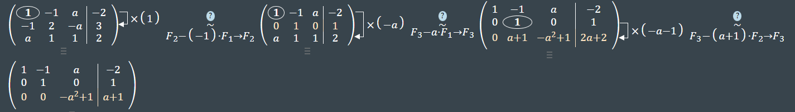
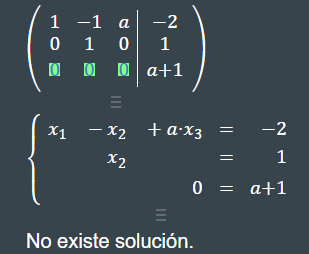
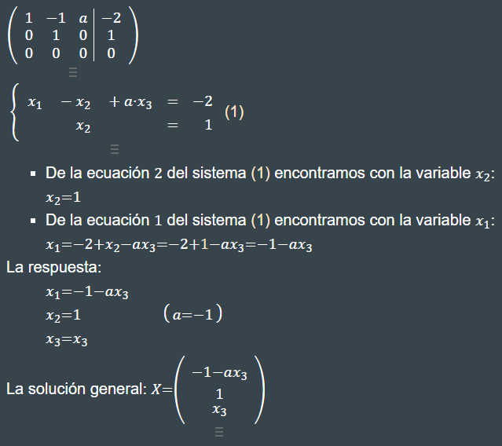

The autoreload extension is already loaded. To reload it, use:
%reload_ext autoreload
Conjunto de Ejercicios
Para cada uno de los siguientes sistemas lineales, obtenga, de ser posible, una solución con métodos gráficos. Explique los resultados desde un punto de vista geométrico.
Utilice la eliminación gaussiana con sustitución hacia atrás y aritmética de redondeo de dos dígitos para resolver los siguientes sistemas lineales. No reordene las ecuaciones. (La solución exacta para cada sistema es \(x_1=-1\),\(x_2=1,x_3=3\))
Utilice el algoritmo de eliminación gaussiana para resolver, de ser posible, los siguientes sistemas lineales, y determine si se necesitan intercambios de fila:
Encuentre el valor(es) de \(\alpha\) para los que el sistema no tiene soluciones.
Encuentre el valor(es) de \(\alpha\) para los que el sistema tiene un número infinito de soluciones.
Suponga que existe una única solución para una a determinada, encuentre la solución.
Resolución del sistema

image.png
1. a = 1;

image.png
2. a = -1;

image.png
Ejercicios Aplicados
Suponga que en un sistema biológico existen n especies de animales y m fuentes de alimento. Si \(x_j\) representa la población de las j-ésimas especies, para cada \(j = 1,2,\cdots\); \(b_i\); representa el suministro diario disponible del i-ésimo alimento y \(a_{ij}\) representa la cantidad del i-ésimo alimento.
$ = (x_j)=[1000, 500, 350, 400],$ y \(\textbf{b}= (b_i) = [3500, 2700, 900]\). ¿Existe suficiente alimento para satisfacer el consumo promedio diario?
b. ¿Cuál es el número máximo de animales de cada especie que se podría agregar de forma individual al sistema con el suministro de alimento que cumpla con el consumo?
c. Si la especie 1 se extingue, ¿qué cantidad de incremento individual de las especies restantes se podría soportar?
d. Si la especie 2 se extingue, ¿qué cantidad de incremento individual de las especies restantes se podría soportar?
Para saber si existe suficiente alimento para satisfacer el consumo promedio diario, debemos multiplicar la matriz A por el número de especies x.
%autoreload 2A = np.array([[1,2,0,3],[1,0,2,2],[0,0,1,1]])x = np.array([1000,500,350,400])b_obtenido = multiplicar_matriz_vector(A,x)print("El vector de consumo promedio diario es de:",b_obtenido)
El vector de consumo promedio diario es de: [3200. 2500. 750.]
Por tanto, sí existe suficiente alimento para satisfacer el consumo promedio diario para las diferentes poblaciones de animales.
Para saber el número máximo de animales de cada especie que se podría agregar de forma individual, es necesario hallar las soluciones usando A y b.
%autoreload 2A = np.array([[1,2,0,3],[1,0,2,2],[0,0,1,1]])x = np.array([1005,511,355,491])b_obtenido = multiplicar_matriz_vector(A,x)print("El vector de consumo promedio diario es de:",b_obtenido)
El vector de consumo promedio diario es de: [3500. 2697. 846.]
Por tanto, para que el alimento alcancé para todas las especies estás pueden crecer de la siguiente manera:
- Especie 1: Crece máximo en 5 individuos.
- Especie 2: Crece máximo en 11 individios.
- Especie 3: Crece máximo en 5 individuos.
- Especie 4: Crece máximo en 91 individuos.
Que la especie uno se extinga nos quiere decir que \(x_1=0\). Con lo que nos queda el siguiente sistema de ecuaciones:
%autoreload 2A = np.array([[1,2,0,3],[1,0,2,2],[0,0,1,1]])x = np.array([0,1000,400,500])b_obtenido = multiplicar_matriz_vector(A,x)print("El vector de consumo promedio diario es de:",b_obtenido)
El vector de consumo promedio diario es de: [3500. 1800. 900.]
Por tanto, si la especie 1 se extingue, las otras especies tener los siguientes incrementos de su población:
- Especie 2: Se incrementa en 500.
- Especie 3: Se incrementa en 50.
- Especie 4: Se incrementa en 100.
Que la especie dos se extinga nos quiere decir que \(x_2=0\). Con lo que nos queda el siguiente sistema de ecuaciones:
%autoreload 2A = np.array([[1,2,0,3],[1,0,2,2],[0,0,1,1]])x = np.array([1080,0,380,430])b_obtenido = multiplicar_matriz_vector(A,x)print("El vector de consumo promedio diario es de:",b_obtenido)
El vector de consumo promedio diario es de: [2370. 2700. 810.]
Por tanto, si la especie 2 se extingue, las otras especies tener los siguientes incrementos de su población:
- Especie 1: Se incrementa en 80.
- Especie 3: Se incrementa en 30.
- Especie 4: Se incrementa en 30.
Estos incrementos son máximos ya que si se varían un poco, el alimento dispuesto para las especies restante no es suficiente.